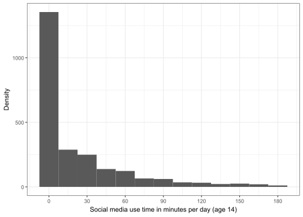
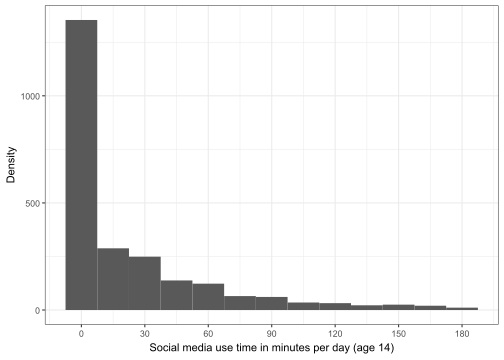

The following objects are masked from 'package:stats':
filter, lag
The following objects are masked from 'package:base':
intersect, setdiff, setequal, union
library(ggplot2)
Warning: package 'ggplot2' was built under R version 4.4.1
library(haven)library(knitr)
Warning: package 'knitr' was built under R version 4.4.2
library(targets)
Warning: package 'targets' was built under R version 4.4.2
data <-tar_read(descriptive_dataset)# Recoding ethnicity to make easier to readdata$DDC06E00 <-recode(data$DDC06E00, `0`="White", `1`="Ethnic minority")
Social media use
Age 11
The number of participants with non-missing social media use data at age 11 is 8617.
data_smu1_plot <- datadata_smu1_plot <- data_smu1_plot %>%select(MCSID, CNUM, ECQ09X00) %>%filter(!is.na(ECQ09X00)) %>%mutate(ECQ09X00 =case_match(ECQ09X00,1~"Never",2~"Less often than once a month",3~"At least once a month",4~"At least once a week",5~"Most days" ))data_smu1_plot$ECQ09X00 <-factor(data_smu1_plot$ECQ09X00, ordered =TRUE, levels =c("Never", "Less often than once a month", "At least once a month", "At least once a week", "Most days"))ggplot(data_smu1_plot, aes(x = ECQ09X00)) +geom_bar() +labs(x ="Social media use frequency (age 11)", y ="Number of participants") +theme_bw() +theme(axis.text.x =element_text(angle =45, hjust =1, vjust =1))
Numbers in categories of usage
Cross-tabulated with categorical interaction variables
data_smu1_cat <- data %>%mutate(ECQ09X00 =case_when( ECQ09X00 ==1~"Never", ECQ09X00 %in%c(2, 3, 4) ~"Less often than most days", ECQ09X00 ==5~"Most days"))data_smu1_cat$ECQ09X00 <-factor(data_smu1_cat$ECQ09X00, ordered =TRUE, levels =c("Never", "Less often than most days", "Most days"))
table(data_smu1_cat$ECQ09X00, data_smu1_cat$AHCSEX00, data_smu1_cat$HES_ei1) %>%data.frame() %>%rename(`Social media use frequency`= Var1, `Sex assigned at birth`= Var2, `HES event (period 1)?`= Var3) %>%mutate(Freq =case_match(Freq, 0:9~"<10", .default =as.character(Freq)), Freq =case_when(`Social media use frequency`%in%c("Less often than most days", "Most days") &`Sex assigned at birth`=="Male"&`HES event (period 1)?`==1~".", TRUE~ Freq)) |>kable()
Income (DDOEDE00):
Mean: 359.1
Standard deviation: 216.9
Age 14
The number of participants with non-missing social media use data at age 14 is 2478. The histogram is truncated at 3 hours, 7.5 minutes to prevent disclosure (number of participants with usage between 2 hours, 52.5 minutes and 3 hours, 7.5 minutes = 11).
ggplot(data[data$mcs6_sm_per_day <187.5,], aes(x = mcs6_sm_per_day)) +geom_histogram(binwidth =15) +labs(x ="Social media use time in minutes per day (age 14)", y ="Density") +scale_x_continuous(breaks =seq(0, 180, 30)) +theme_bw()
Warning: Removed 10108 rows containing non-finite outside the scale range
(`stat_bin()`).

Percentiles:
smu_2_percentiles <-quantile(data$mcs6_sm_per_day, c(seq(0, 0.9, 0.1), 0.99), na.rm =TRUE) %>%data.frame()names(smu_2_percentiles) <-"Social media use per day (minutes)"smu_2_percentiles |>kable()
Social media use per day (minutes)
0%
0.0
10%
0.0
20%
0.0
30%
0.0
40%
0.0
50%
0.0
60%
15.0
70%
30.0
80%
45.0
90%
85.0
99%
267.3
Numbers in categories of usage
Total
1-hour threshold
data_smu2_cat1 <- data %>%mutate(mcs6_sm_per_day =case_when( mcs6_sm_per_day ==0~"None", mcs6_sm_per_day >0& mcs6_sm_per_day <=60~"Moderate", mcs6_sm_per_day >60~"High"))table(data_smu2_cat1$mcs6_sm_per_day) %>%data.frame() %>%rename(`Social media use per day`= Var1) |>kable()
In total 6390 eligible participants did not consent to HES linkage.
Note that in the subsequent tables that the totals will not add up to the numbers above because the numbers of participants with missing responses to the grouping variables are not shown.
By region
Period 1
data_HES1 <- data %>%filter(HES_ei1 ==1)table((data_HES1 %>%mutate(DAREGN00 =as_factor(DAREGN00)))$DAREGN00) %>%data.frame() %>%rename(`Region of residence`= Var1) %>%mutate(Freq =case_match(Freq, 0:9~"<10", .default =as.character(Freq))) |>kable()
Region of residence
Freq
North East
<10
North West
16
Yorkshire and the Humber
<10
East Midlands
<10
West Midlands
<10
East of England
<10
London
13
South East
<10
South West
<10
Period 2
data_HES2 <- data %>%filter(HES_ei2 ==1)table((data_HES2 %>%mutate(EAREGN00 =as_factor(EAREGN00)))$EAREGN00) %>%data.frame() %>%rename(`Region of residence`= Var1) %>%mutate(Freq =case_match(Freq, 0:9~"<10", .default =as.character(Freq))) |>kable()
Region of residence
Freq
North East
<10
North West
18
Yorkshire and the Humber
19
East Midlands
11
West Midlands
15
East of England
19
London
21
South East
34
South West
18
By sex assigned at birth
Period 1
table(data_HES1$AHCSEX00) %>%data.frame() %>%rename(`Sex assigned at birth`= Var1) |>kable()
Sex assigned at birth
Freq
Male
30
Female
30
Period 2
table(data_HES2$AHCSEX00) %>%data.frame() %>%rename(`Sex assigned at birth`= Var1) |>kable()
Social media use
Age 11
The number of participants with non-missing social media use data at age 11 is 8617.
Numbers in categories of usage
Cross-tabulated with categorical interaction variables
Characteristics of non-users vs users
Non-users
Users
Age 14
The number of participants with non-missing social media use data at age 14 is 2478. The histogram is truncated at 3 hours, 7.5 minutes to prevent disclosure (number of participants with usage between 2 hours, 52.5 minutes and 3 hours, 7.5 minutes = 11).

Percentiles:
Numbers in categories of usage
Total
1-hour threshold
2-hour threshold
Suppressed to prevent disclosure.
3-hour threshold
4-hour threshold
Cross-tabulated with categorical interaction variables
The following are for a 2-hour threshold only.
Characteristics of non-users vs users
Non-users
Users